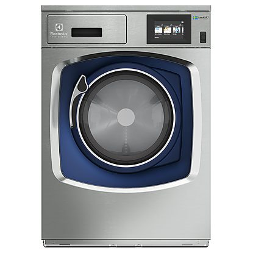
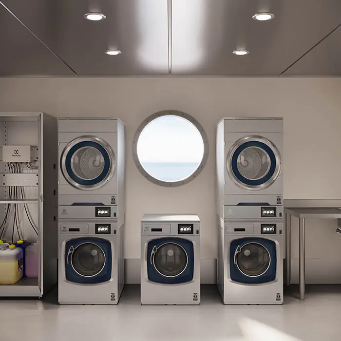
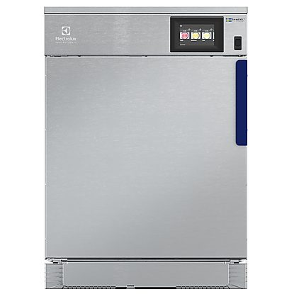

Professioneel wassen
Compacte professionele wasmachines voor dagelijks en intensief zakelijk gebruik. Ontwikkeld voor constante wasresultaten, efficiënte processen en een betrouwbare bedrijfsvoering.

ELECTROLUX PROFESSIONAL
Electrolux Professional bij Obbink Service.
Professionele was- en droogoplossingen voor organisaties waar betrouwbaarheid, efficiëntie en continuïteit belangrijk zijn.

Professionele apparatuur hoeft niet altijd groot te zijn. Electrolux Professional ontwikkelt compacte was- en droogoplossingen voor locaties waar ruimte beperkt is, maar waar wel professionele prestaties worden gevraagd.

Compacte professionele wasmachines voor dagelijks en intensief zakelijk gebruik. Ontwikkeld voor constante wasresultaten, efficiënte processen en een betrouwbare bedrijfsvoering.

Professionele droogoplossingen die capaciteit, gebruiksgemak en efficiëntie combineren in een compacte opstelling.
Ontworpen voor organisaties waar apparatuur dagelijks moet presteren.
Slimme processen helpen het verbruik te beperken zonder in te leveren op het gewenste resultaat.
Heldere bediening en slimme programma’s maken dagelijks gebruik eenvoudig voor verschillende gebruikers.
Professionele techniek gericht op betrouwbaarheid, levensduur en voorspelbare bedrijfskosten.
OBBINK SERVICE
Een professionele machine is onderdeel van een bedrijfsproces. Daarom kijkt Obbink Service verder dan alleen het apparaat. We adviseren over de toepassing, verzorgen installatie en ingebruikname en blijven beschikbaar voor onderhoud en technische service.
Vertel ons waar de apparatuur wordt gebruikt en wat u nodig heeft. Wij helpen u graag bij het kiezen van een passende professionele oplossing.